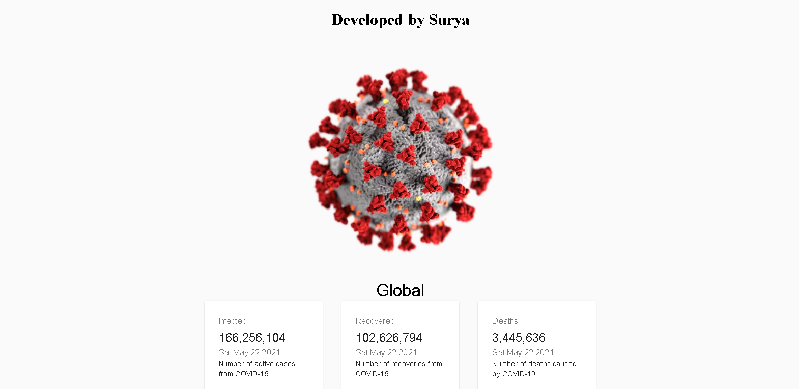

My Projects

My self Surya Narayan Nayak i am from Odisha and i am a programmer + Ethical Hacker i am in STD-IX and I love programming and Ethical Hacking stuffs alot.
My favorite languages and i just love it bootstrap,HTML,CSS,javascript is for web development
My preferred technologies for front-end web development and component design.
My preferred technologies for back-end web programming and database architecture.
My favorite tools for code editing, and container orchestration.